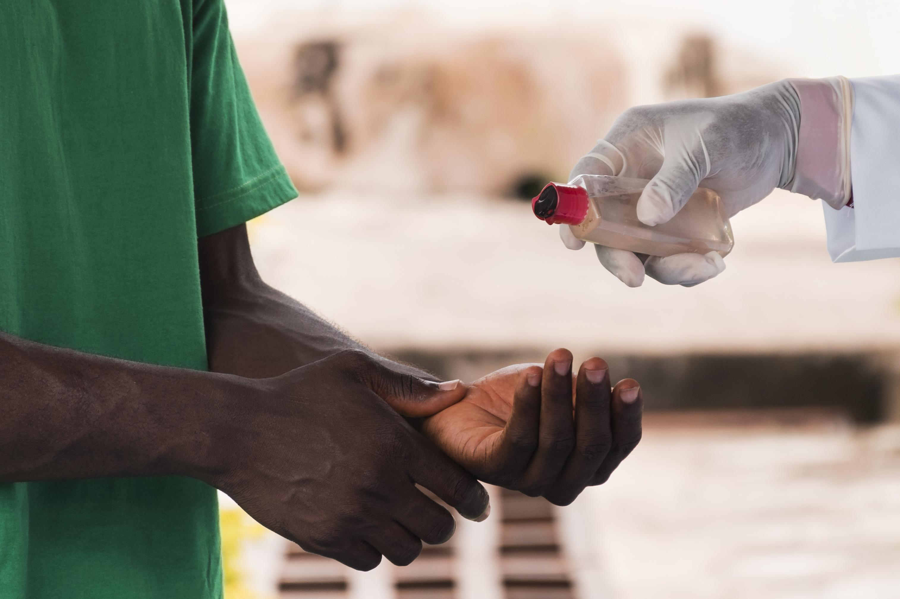

KAN Sustainable Health Action for Development (SHAP-Uganda) Limited is a not-for-profit organization founded in 2021 by passionate public health professionals. Our mission is to provide sustainable, integrated, and high-quality health care services to marginalized and vulnerable individuals through community-driven interventions.
SHAP-Uganda


Where We Work
We operate in Kamuli, Luuka, Buyende, Kayunga, and Namutumba Districts, focusing on:
- Maternal, Newborn, Child, and Adolescent Health Services
- Communicable and Non-Communicable Disease Prevention
- Community Health Initiatives
- School and Environmental Health Programs
Our Vision
A transformed community for better health outcomes.
Our Mission
To improve accessibility to sustainable quality health care through empowering vulnerable communities and strengthening existing health structures.
Our Core Values
- Transparency: Openly sharing information and accountability.
- Inclusiveness & Equity: Ensuring no one is left behind.
- Professionalism: Upholding ethical standards and respect.
- Innovativeness: Encouraging creativity and sustainability.
- Accountability: Responsible use of resources and stakeholder trust.